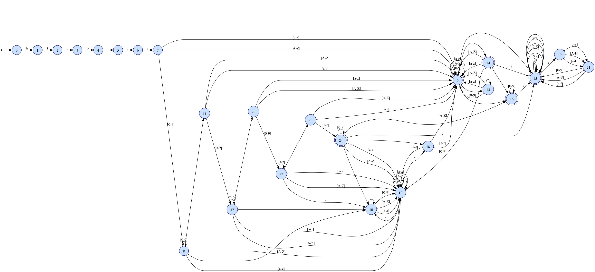

1462290815058406142878645747899975197440717007135Can you guess what this number means? I assure you that it will be clear, if you read this page through! --日本語解説 at sw@mac.info
Introduction
RANS is a library, implementation of Abstract Numeration System (ANS) on a regular language. RANS's concept is very simple, just calculates the number from given string on a regular language. In other words,
- RANS provides a minimal perfect hash function that maps string to positive integer.
- RANS provides the 'val' that is a bijective function from N onto a language.
- and 'rep' is a inverse function of 'val'.
- RANS makes set of acceptable string totally ordered by Lexicographic order.
val("")==0, rep(2)=="b", val("c")==3, rep(5)=="ab", val("aaa")=9
are hold. These definition and aspect as stated above is basic concept of ANS.
Install and Try RANS
RANS's main code is contained in actually one header file: rans.hpp If you wants to use RANS as a C++ library, check this page RANS C++ API Documentation. In this page, I just explain how to use RANS's command line tool 'rans'. Firstly, you should checkout source code, and build it. (Depends on: gflags, gtest, gmp)
% git clone "http://sinya8282@github.com/sinya8282/RANS.git"
% cd RANS
% make check # can be skipped
% make install # install header file (rans.hpp) & RANS cui (rans)
% # rehash
% rans
RANS command line tool.
Usage: rans REGEX [Flags ...]
You can check RANS extended regular expression syntax via '--syntax' option.
You can also install via Homebrew if you using Mac OS X:
% brew tap sinya8282/rans
% brew install --HEAD rans
Now, you can try 'rans'.
% rans "a*(c*|b*)" --text aaaaaaaaaaaaaaaaaaaaaaaaaaaaaaaaaaaaaaaaaaaa
1936
% rans "a*(c*|b*)" --value 2382
aaaaaaaaaccccccccccccccccccccccccccccccccccccccc
Regular Expression Syntax
You could check syntax via --syntax option
% rans --syntax
RANS "simplified" extended regular expression syntax:
regex ::= union* EOP
union ::= concat ('|' concat)*
concat ::= repetition+
repetition ::= atom quantifier*
quantifier ::= [*+?] | '{' (\d+ | \d* ',' \d* ) '}'
atom ::= literal | dot | charclass | '(' union ')'
utf8char # optional (--utf8)
charclass ::= '[' ']'? [^]]* ']'
literal ::= [^*+?[\]|]
dot ::= '.'
utf8char ::= [\x00-\x7f] | [\xC0-\xDF][\x80-\xBF]
| [\xE0-\xEF][\x80-\xBF]{2}
| [\xF0-\xF7][\x80-\xBF]{3}
NOTE: dot '.' matchs any 1byte character, including newline '\n'.
Use RANS as a Text Converter
I often see this question in web, 「How to convert Hexadecimal and Octal to Binary?」. RANS provides general solution of this problem(Base-conversion, moregeneraly). It's simple, calculates the val() of given text on base-k language, and then calculates the rep() of before val() on base-l language. Example:% # first, convert decimal representation to octal representation
% rans '0|[1-7][0-7]*' --text 31723501261722172350012617220172317235012617221501261722172350126172217235012617221
366279202153417409243738390844334144022596873428737191758601997964469280401
% # OK. next, convert this value to hexadecimal representation
% rans '0|[1-9A-F][0-9A-F]*' --value 366279202153417409243738390844334144022596873428737191758601997964469280401
CF4E82B1E91E9D00AC7A40F4CF4E82B1E91A0AC7A47A74158F48F4E82B1E91
% # You can do that more directly using --convert_from and --convert_to options.
% rans --convert_from '0|[1-7][0-7]*' --convert_to '0|[1-9A-F][0-9A-F]' --text 31723501261722172350012617220172317235012617221501261722172350126172217235012617221
CF4E82B1E91E9D00AC7A40F4CF4E82B1E91A0AC7A47A74158F48F4E82B1E91
Use RANS as a Data Compressor
RANS's concept is very simple, but more flexible than that.
You might think 「So what? Is there any practical usage?」
(｀・ω・´) イイぜっ!! 見せてやるっ！正規表現の無限の可能性をよっ！
Okay, here I give a more practical example of engineering application about "compression".
that is, http-url.
formal http-url syntax can be defined by the (POSIX extended) regular expression. such as:
http://((([a-zA-Z0-9]|[a-zA-Z0-9][-a-zA-Z0-9]*[a-zA-Z0-9])\\.)*([a-zA-Z]|[a-zA-Z][-a-zA-Z0-9]*[a-zA-Z0-9])\\.?|[0-9]+\\.[0-9]+\\.[0-9]+\\.[0-9]+)(:[0-9]*)?(/([-_.!~*'()a-zA-Z0-9:@&=+$,]|%[0-9A-Fa-f][0-9A-Fa-f])*(;([-_.!~*'()a-zA-Z0-9:@&=+$,]|%[0-9A-Fa-f][0-9A-Fa-f])*)*(/([-_.!~*'()a-zA-Z0-9:@&=+$,]|%[0-9A-Fa-f][0-9A-Fa-f])*(;([-_.!~*'()a-zA-Z0-9:@&=+$,]|%[0-9A-Fa-f][0-9A-Fa-f])*)*)*(\\?([-_.!~*'()a-zA-Z0-9;/?:@&=+$,]|%[0-9A-Fa-f][0-9A-Fa-f])*)?)?
This is hairy, pathological expression. However, the minimal DFA that corresponds this has only 26 states. I generated one graph of this DFA via --dump_dfa option (also this expression is contained in the repository: test/http-url.regex).
% rans -f test/http-url.regex --dump_dfa | dot -Tpng -o http-url.png as shown below. 
Good. http-url is definable by a regular expression, recognizable by a DFA, and moreover - numerable by RANS. Let's try to get the number of this page's http-url: http://sinya8282.github.com/RANS/
% rans -f test/http-url.regex --text "http://sinya8282.github.com/RANS/"
1462290815058406142878645747899975197440717007135
% rans -f test/http-url.regex --value 1462290815058406142878645747899975197440717007135
http://sinya8282.github.com/RANS/
% # Do you remember seeing that number somewhere before ? ;-)
and data size of this url and number is 33 and 20 (Bytes). You can make sure it by --compress/--decompress option.
% echo -n "http://sinya8282.github.com/RANS/" > url
% rans -f test/http-url.regex --compress url
% ls -lh url url.rans # compressed file is created with '.rans' extension
-rw-r--r-- 1 sinya staff 33 May 15 21:34 url
-rw-r--r-- 1 sinya staff 20 May 15 21:34 url.rans
% rm url
% rans -f test/http-url.regex --decompress url.rans
% cat url
http://sinya8282.github.com/RANS/
that is, I think RANS can gives us "compact" representation of source text on the assumption that we know well-defined language (or scheme, regular expression). like a http-url, there are many scheme based languages in real-world. So what do you use it for? dispose of the matter at YOUR discretion ;-)
You can see more usage via --helpshort option
Performance: Does RANS work well on Big Data?
No, I don't think so (at least for now). Because the larger the number becomes, the more operation and space will be needed in multiprecision integer multiplication (RANS uses GMP C++ class interface). Suppose a each multiplication performs in constant time, val() runs in time O(n*|D|^2) and rep() runs in time O(n log n * |D|^3) where n is the length of the source text and |D| denotes the size of the DFA.
Do you become interested in RANS?and how it works internally?
You could check source code in repository! Also if you interested in ANS, more mathematical aspects, see Berthé and Rigo's great book "Combinatorics, Automata and Number Theory" or their lecture notes.
Author
Ryoma Sin'ya (@sinya8282)
Feature suggestions and bug reports are always welcome via GitHub issues or Twitter.
Acknowledgment
- Special thanks to Michel Rigo who is one of the originators of ANS, and gave me helpful comments.